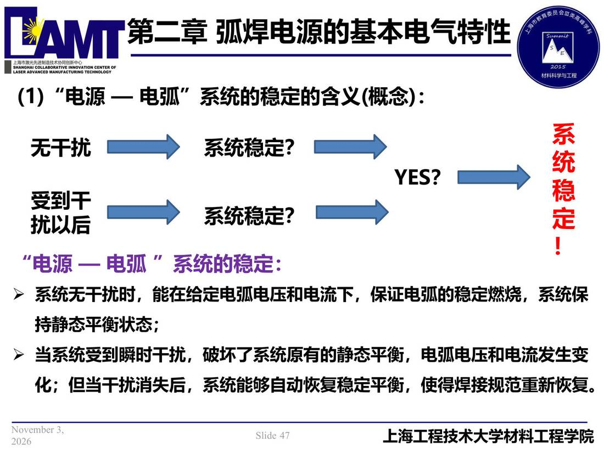

02 第2章 基本电气特性/p047 “电源 — 电弧”系统的稳定的含义(概念)
p047 “电源 — 电弧”系统的稳定的含义(概念)
📄 原文：📄 弧焊电源 课件（PDF 第 47 页）（幻灯片 47/273；PDF 第 47 页）
“电源 — 电弧”系统的稳定的含义(概念)

讲义原文
系
无干扰
系统稳定？
统
YES？
稳
受到干
系统稳定？
定
扰以后
！
“电源 — 电弧 ”系统的稳定：
- 系统无干扰时，能在给定电弧电压和电流下，保证电弧的稳定燃烧，系统保持静态平衡状态；
- 当系统受到瞬时干扰，破坏了系统原有的静态平衡，电弧电压和电流发生变化；但当干扰消失后，系统能够自动恢复稳定平衡，使得焊接规范重新恢复。
关联
- ← p046 · 本章索引 · p048 →
- 同组：2.3 弧焊电源的外特性 · 全章：基本电气特性
- 概念卡：电源—电弧系统稳定条件